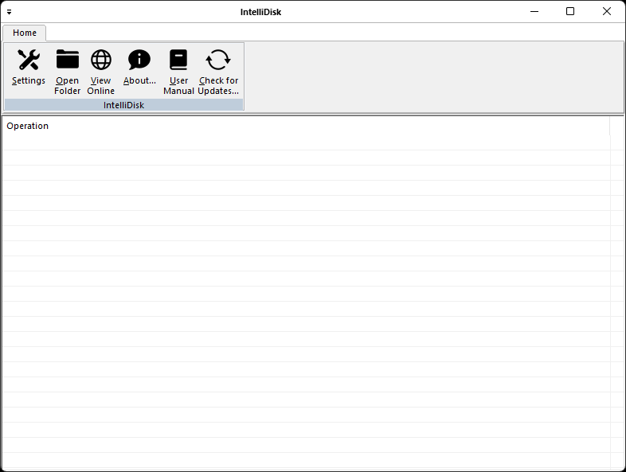

IntelliDisk is a free (as in “free speech” and also as in “free beer”) distributed storage solution. Running in the Microsoft Windows environment, its use is governed by GNU General Public License v3.0. IntelliDisk is written in C++ and uses pure Win32 API and STL which ensures a higher execution speed and smaller program size. By optimizing as many routines as possible without losing user friendliness, IntelliDisk is trying to reduce the world carbon dioxide emissions. When using less CPU power, the PC can throttle down and reduce power consumption, resulting in a greener environment. I hope you enjoy IntelliDisk as much as I enjoy coding it!
IntelliDisk application allows users to save files across multiple devices, and have them automatically sync on these devices. This means someone can access and work on the same document in multiple locations. IntelliDisk application provides relatively easy access to cloud storage space, allowing options to share content with others. IntelliDisk application is free as in free speech/free beer. It is developed as a client-server architecture, which separates application into two logical and physical computing tiers.
A client-server application is a program that runs on the client-side while accessing the information over a remote server. The client-server always makes requests to the remote server by calling functions of the server to retrieve information. The client program and the server program may run on different systems and on different platforms where they require a communications layer known as middleware.
The client-server application might run on a network client or a network server. The applications are solely described on their architecture except for the fact that how it is deployed on the network. It uses a two-tier architecture that has two users; the client and the server.
The server machine acts as a host that can run single or multiple server programs that share their resources with the clients. Sometimes the server gets overloaded when simultaneous requests are received from the client.
The communication between the client and server is a two-way street. Servers can reach the client to make sure that the client has appropriate updates, patches, or if there are any other requirements. Once the inquiry is done, the server closes the connection to the client so that the bandwidth space and the network are conserved.
Some of the typical features of client-server applications are as follows:
The installer will likely require Administrative privileges in order to install IntelliDisk (and later, to update IntelliDisk or install or update plugins, or anything else that requires writing to the installation directory). If you do not have Administrative privileges, you either need to tell the installer to use a location where you do have write permission (though that may still ask for Administrator privileges), or you may choose not use the installer and instead run a portable edition from a directory where you have write permission.
These instructions will allow you to run a portable or mini-portable (also called “minimalist”), without requiring administrative privileges.
For all the portable editions, everything (the application, settings, and plugins) is stored in one folder hierarchy. And by default, the portable editions do not mess with operating system settings (so no file associations or Edit with IntelliDisk context-menu entries) – if you want such with a portable edition, you will have to set it up manually.
The portable zip edition contain all the themes, user defined languages, auto-completions, localizations, and default plugins and Plugins Admin tool that come with the installed version of IntelliDisk.
The portable zip edition of IntelliDisk can be removed by deleting the directory they came in. If you manually set up file associations or context-menu entries in the OS, it is your responsibility to remove them yourself.
<?xml version="1.0" encoding="UTF-16" standalone="no"?>
<xml>
<IntelliDisk>
<ServicePort>8080</ServicePort>
<HostName>localhost</HostName>
<HostPort>3306</HostPort>
<Database>MySQL_database</Database>
<Username>MySQL_username</Username>
<Password>MySQL_password</Password>
</IntelliDisk>
</xml>Note: you should check the option "Start IntelliDisk automatically when I sign in to Windows".
As noted in the Contributing Rules for IntelliDisk, all Pull Requests need to be attached to a issue on GitHub. So the first step is to create an issue which requests that the functionality be improved (if it was already there) or added (if it was not yet there); in your issue, be sure to explain that you have the functionality definition ready, and will be submitting a Pull Request. The second step is to use the GitHub interface to create the Pull Request from your fork into the main repository. The final step is to wait for and respond to feedback from the developers as needed, until such time as your PR is accepted or rejected.